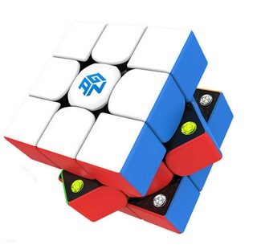

3x3 Tutorial

By Cole
How to solve a Rubik’s cube
With the LBL(layer by layer) method!

The first step to solving a Rubik’s cube is to make a white daisy

All you have to do is to try put the white edges to the yellow centre
If the peace is in the right spot but flipped you could use this algorithm to fix it

Like this!
How to solve a Rubik’s cube
After we finish the first step we will start making the cross
If we want to make the cross we first need to find a white petal and there should be two colour on it one should be white and the other shouldn’t be yellow. once you find the white piece you should see the colour that is not white and match it to it’s centre then bring it down to the white side like this
When you finish it should look like this

If you followed all of that correctly your cross should be accomplished.
The first thing to do is to find a white corner on the top, after we look at what colours there are on the corner instead of white for example my corner had blue, red, and white on it, then I would bring the corner between the blue and red centre then hold it like this
How to solve a Rubik’s cube
The next thing to make the first layer
Right now you have to learn two new algorithms!
The second algorithm is this, and also the second algorithm is just the first algorithm left handed
The first algorithm that you have to learn is this

Keep learning first layer on the next page
How to solve a Rubik’s cube
You could get 4 cases
Case 1: white piece facing top. Put the white piece on the Right like this then do the 1st algorithm three times
Case 2:white piece facing right. Put the white piece on the right then do the 1st algorithm 1 time
Case 3:white piece facing left. Put the white piece on the left then do algorithm 2nd one time like this
Case 4: If there are no corner piece on top then it must be stuck on the bottom, then you could put it on the right then do 1st algorithm like this then do the rest like normal


How to solve a Rubik’s cube
Right now we are going to do second layer this is probably basically the hardest part but if you know algorithm one and algorithm two it will be really easy I promise.
This time there will be 2 cases for second layer and two algorithms for second layer but don’t get the algorithms mixed up because the algorithm are pretty similar
For the first layer you had to find a white corner but for the second layer you have to find a edge that is not white or yellow on the top
For example I found this piece, right?

So now me see that this bottom piece is orange so I will connect the piece to it’s centre
Now I see that it has to go to the left slot
See more of second layer on the next page
As you can see there is no yellow piece on it that means it’s correct
How to solve a Rubik’s cube
The next thing we have to do is to make the yellow cross, and this time there would be four cases
First case is where the yellow side is only a dot
The second case is where there is a L shape on the yellow side
The third case is where there is a line on the yellow side
The fourth case is where there is a full cross already on the yellow side and that means you already skipped this step


Keep learning yellow cross on the ext page
How to solve a Rubik’s cube
You are gonna Learn another algorithm that is super duper simple
Now you have to learn another algorithm which is just the opposite of algorithm one and this algorithm will solve the L case
So for line we are gonna hold it like this then do the algorithm

Keep learning about yellow cross on the next page
How to solve a Rubik’s cube
Warning⚠️ this is the hardest part and the most easy part to mess up and if you mess up you gotta restart
⚠️
So now we have to solve the yellow side.
Pls don’t mess up🙏
If I wanted to solve this corner I will do the first algorithm four times

If I wanted to solve this corner I will do the first algorithm two times

Keep learning yellow side on the next page
How to solve a Rubik’s cube
If you wanted to do the first way then you should put the headlights in front of you then do a rotation making the yellow side facing you then we do the algorithm
In order to do the last layer you need to know what’s a headlight
When this happens you could do the first nine move solution or the second 9 move solution so you could make it into all the corners solved for the last layer so all we would have to do now would be solving the edges into the correct place.
This is a headlight


If you wanted to do the second way then you should put the headlights on the right then rotate to make the white side facing you then we do the second nine move algorithm
After you finish the algorithm the corners should be in the right place
A headlight is where there two of the same coloured corners around a random edge
And that should also solve the corners for last layer
Hope you liked my Rubik’s cube tutorial

Hope you liked my tutorial
Thank you
By Cole